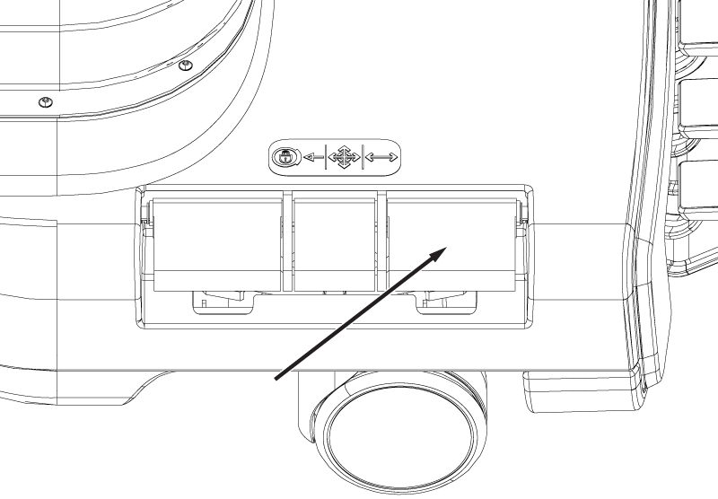

Makes sure the patient table controls operate correctly.
Prerequisites
1 Table movement verification for patient table
Procedure
- Undock the patient table by pressing the second pedal from the left at the rear of the table and move the table away from the dock.
- Press the table Down pedal (far right) to initiate downward movement of the table top. Downward movement of the table top should stop when the pedal is released. Make sure the table travels from the highest to the lowest position with the table unloaded.
- Pump the table Up pedal (second from right) to start upward movement of table. Make sure the table reaches its highest position in pedal strokes or fewer. For accurate check of this function, use complete pedal strokes (push the pedal all the way down and let pedal come all the way up before starting next down stroke).
- Press the steer lock pedal. Rotate the table left and right. Make sure that both the rear and the right front wheels caster.
Figure 1. Brake steer lock pedal

The left front wheel should remain oriented longitudinally along the table (it could rotate up to 180 degrees before locking). - Press the Caster Lock pedal on one of the rear casters to lock both rear casters.
- Make sure the caster locks inhibit all patient table movement when the pedal is in the locked position.
- Make sure there is no movement of the cradle while the patient table is undocked.
- Disengage the caster lock and repeat Step 5 on the opposite side.
- Disengage the caster lock and dock the patient table by aligning the table with the dock and then pressing the far left Dock pedal. Successful docking should not require excessive force.
- Make sure the emergency release lever (located on the right side of the dock) releases the patient table from the dock when it is pulled. If excessive force is required to pull the handle, adjust the dock hook tension.
- Dock the patient table.
- Check that pulling the emergency release lever (on the right side of the dock) with one arm releases the patient table from the dock. If excessive force is required to pull the handle, adjust dock hook tension.
- With the cradle fully in the bore, make sure the table Down pedals on both the dock and table itself do not allow the table to go down.